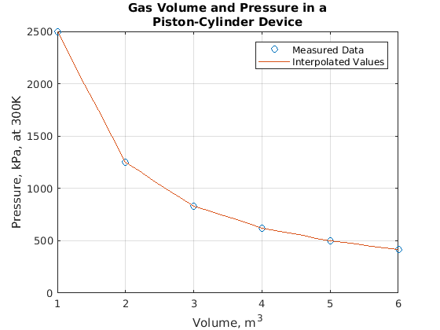
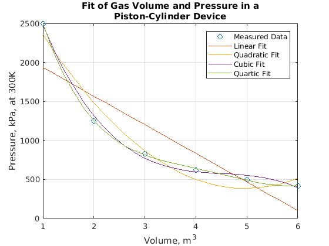

Contents
Homework #7
Jason Chiarulli
ENGR 108
Matlab for Engineers, Third Edition
clear,clc
Problem 13.2
% Defines a vector from measured volume data in m^3 Volume = 1:6; % Defines a vector from measured pressure data in kPa at 300K Pressure = [2494 1247 831 623 499 416]; % Defines a vector with volume measurements every 0.2m^3 New_Volume = 1:0.2:6; % Estimates new pressure measurements for the new volume % measurements with linear interpolation New_Pressure = interp1(Volume,Pressure,New_Volume); % Groups the new pressure and new volume values into a table table =[New_Volume; New_Pressure]; % Displays the title of the table disp('Expanded Volume-Pressure Table') % Displays the column headers of the table disp('Volume, m^3 Pressure, kPa, at 300K') % Displays and formats the new pressure and new volume values fprintf('%7.2f %20.2f \n', table) % Plots the volume and pressure data as circles and plots the % new volume and new pressure data as a solid line plot(Volume,Pressure,'o',New_Volume,New_Pressure) % Creates a title title({'Gas Volume and Pressure in a', 'Piston-Cylinder Device'}) % Creates a x-axis label xlabel('Volume, m^3') % Creates a y-axis label ylabel('Pressure, kPa, at 300K') % Creates a background grid grid on % Creates a legend legend('Measured Data','Interpolated Values')
Expanded Volume-Pressure Table Volume, m^3 Pressure, kPa, at 300K 1.00 2494.00 1.20 2244.60 1.40 1995.20 1.60 1745.80 1.80 1496.40 2.00 1247.00 2.20 1163.80 2.40 1080.60 2.60 997.40 2.80 914.20 3.00 831.00 3.20 789.40 3.40 747.80 3.60 706.20 3.80 664.60 4.00 623.00 4.20 598.20 4.40 573.40 4.60 548.60 4.80 523.80 5.00 499.00 5.20 482.40 5.40 465.80 5.60 449.20 5.80 432.60 6.00 416.00
Problem 13.7
% Defines a vector from measured volume data in m^3 V = 1:6; % Defines a vector from measured pressure data in kPa at 300K P = [2494 1247 831 623 499 416]; % Defines a vector with volume measurements every 0.2m^3 new_V = 1:0.2:6; % Fits the data with the polyfit function for first-, second-, % third-, and fourth-order polynomials and polyval calculates % new pressure values new_P1 = polyval(polyfit(V,P,1),new_V) new_P2 = polyval(polyfit(V,P,2),new_V); new_P3 = polyval(polyfit(V,P,3),new_V); new_P4 = polyval(polyfit(V,P,4),new_V); % Plots the volume and pressure data as circles and plots the % new volume and new pressure data as solid lines plot(V,P,'o',new_V,new_P1,new_V,new_P2,new_V,new_P3,new_V,new_P4) % Creates a title title({'Fit of Gas Volume and Pressure in a', 'Piston-Cylinder Device'}) % Creates a x-axis label xlabel('Volume, m^3') % Creates a y-axis label ylabel('Pressure, kPa, at 300K') % Creates a background grid grid on % Creates a legend legend('Measured Data','Linear Fit','Quadratic Fit','Cubic Fit', ... 'Quartic Fit') % Displays text disp('The fourth-order model seems to do the best job since it follows the measured data points the best.')
new_P1 =
1.0e+03 *
Columns 1 through 7
1.9356 1.8622 1.7889 1.7155 1.6421 1.5687 1.4953
Columns 8 through 14
1.4219 1.3486 1.2752 1.2018 1.1284 1.0550 0.9816
Columns 15 through 21
0.9083 0.8349 0.7615 0.6881 0.6147 0.5413 0.4680
Columns 22 through 26
0.3946 0.3212 0.2478 0.1744 0.1010
The fourth-order model seems to do the best job since it follows the measured data points the best.
 Problem 13.13
% a) % Defines a vector from -5 to +5 x = -5:5; % Defines a function y = 12*x.^3 - 5*x.^2 + 3; % Approximates the derivative at each x value dydx_approx = diff(y)./diff(x) % b) % Analytically determines the derivative at each x value dydx_analytical = 36*x.^2 - 10*x % Displays text disp('The total number of results differ and the corresponding values of the results all differ')
dydx_approx = 777 479 253 99 17 7 69 203 409 687 dydx_analytical = 950 616 354 164 46 0 26 124 294 536 850 The total number of results differ and the corresponding values of the results all differ
Problem 13.17
% Computes the integral under a curve using adaptive Simpson quadrature quad_solution = quad('5*x.^3 - 2*x.^2 + 3',-1,1) % Computes the integral under a curve using adaptive Lobatto quadrature quadl_solution = quadl('5*x.^3 - 2*x.^2 + 3',-1,1) % Computes the integral by finding the symbolic integral % Note: Unable to use int since the DSP System Toolbox and Symbolic % Toolbox are not installed on my version of MATLAB % Was able to confirm the code works by reviewing the practice exercises % int_solution = double(int('5*x^3 - 2*x^2 + 3',-1,1)) % Defines a varible 'a' a = -1; % Defines a variable 'b' b = 1; % Calculates the integral by using the analytical method analytical_solution = 5/4*(b^4-a^4) - 2/3*(b^3-a^3) + 3*(b-a) % All methods of calculating the integral returned the same value
quad_solution =
4.6667
quadl_solution =
4.6667
analytical_solution =
4.6667